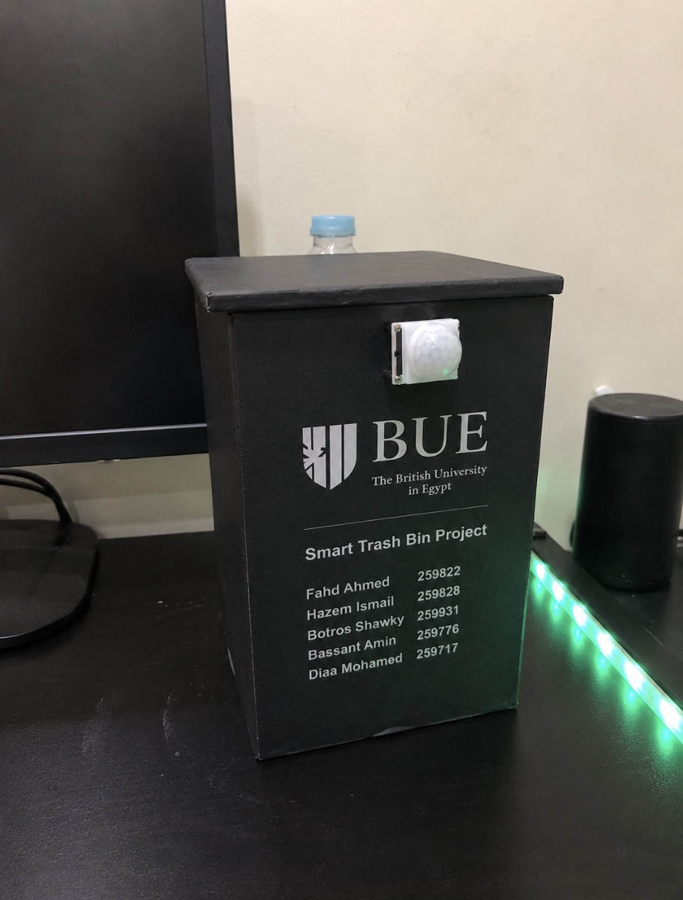
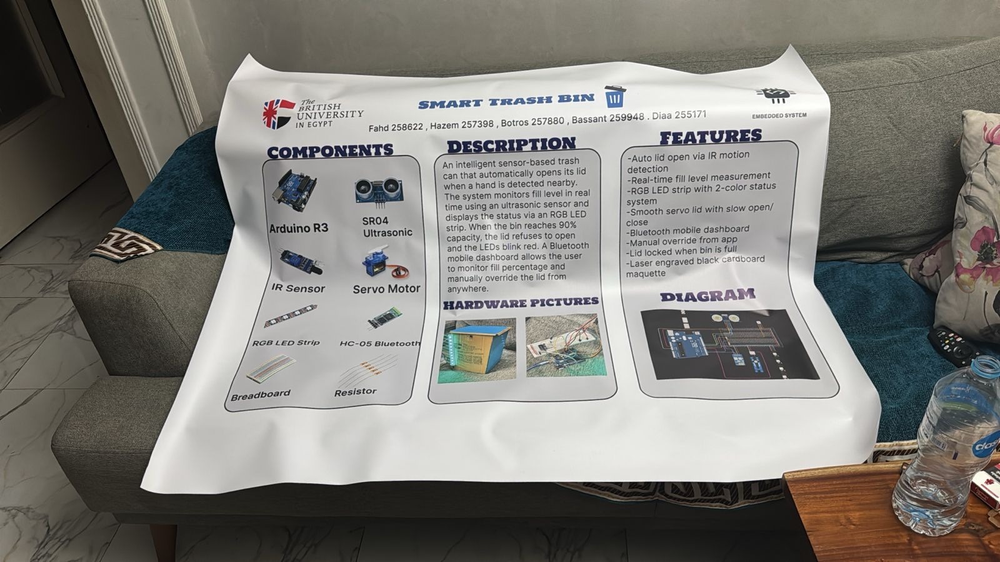

Hardware meets softwareSmart Trash Bin
A hands-free lid. Live fill monitoring. Bluetooth control.
A physical prototype that brings it all together.
Looking for my
next opportunity.
Selected work

Hardware meets softwareA hands-free lid. Live fill monitoring. Bluetooth control.
A physical prototype that brings it all together.
A normalized SQL database for a gym’s core records.
Built with a four-person team I led.
A little about me
I enjoy technical projects, exploring new ideas, and learning by doing. Outside of tech, I love volunteering, meeting new people, and discovering new places.
Completed an AI- and ESG-focused internship, analyzing sustainability frameworks in a corporate banking environment.
Supported club events through media, communication, organization, and collaboration.
Educational volunteering with children, focused on chess, robotics, technology, intercultural exchange, and teamwork.
International participant at the Global Youth Summit.
Informatics and Computer Science
Programming, data, and the foundations
that connect them.
Python · C++ · Java · JavaScript · HTML · CSS
OOP · Data Structures · Algorithms · Debugging · Git · GitHub · SQL · Database Design · Relational Databases · Data Analysis
Artificial Intelligence · Machine Learning · Python for AI · Data Analytics · AI fundamentals
Arduino · Microsoft Office · Problem Solving · Communication · Teamwork · Presentation · Leadership · Time Management · Adaptability · Critical Thinking · Cross-Cultural Collaboration · Project Management
Open to what’s next
Based in New Cairo · Thinking internationallyLooking for a curious mind on your team?
I’m open to software and AI internships,
technical collaborations, and new connections.
Team project
Connecting sensing, movement, and mobile control in one working prototype.

Build a sensor-based bin that opens when a hand is detected, monitors how full it is, and gives the user control through Bluetooth. This team project brought hardware and software together in a physical waste-management prototype.
An IR sensor detects a nearby hand and a servo motor opens the lid.
An ultrasonic sensor measures fill level, with an RGB LED strip providing a visible status.
HC-05 Bluetooth enables mobile monitoring and manual override. The lid locks when the bin is full.
Arduino R3 · IR sensor · Ultrasonic sensor · Servo motor · HC-05 Bluetooth · RGB LED strip
2024–2025
A structured foundation for the people and equipment behind a gym.
Scroll sideways to explore the full diagram →
member_idfull_nameemailassigned_employee_idmembership_idmember_idplan_idstart_date · end_dateplan_idplan_nameduration_monthspriceemployee_idfull_nameroledepartmentmaintenance_idemployee_idequipment_idserviced_at · statusequipment_idequipment_namecategoryconditionOne member can have multiple memberships, each linked to one plan. An employee can support multiple members and record maintenance for different pieces of equipment.
I led a four-person university team to design and implement a normalized relational SQL database covering members, employees, and equipment inventory.
Organized the system’s core information into a relational structure.
Used entity–relationship modelling to describe the database structure.
Applied normalization as part of designing the SQL database.